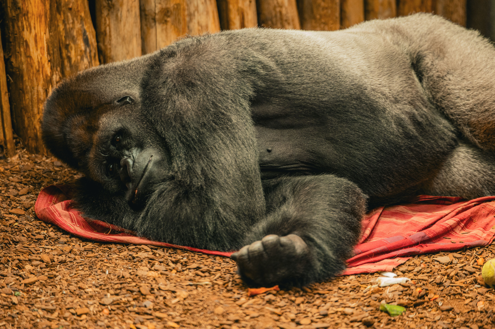

Mountain gorilla trekking is one of Africa's most extraordinary wildlife experiences, and the Democratic Republic of Congo (DRC) offers a unique opportunity to encounter these magnificent primates in their natural habitat. Home to Virunga National Park — the oldest national park in Africa — and Kahuzi-Biega National Park, where visitors can trek the rare eastern lowland gorillas, Congo attracts adventurous travelers seeking a less crowded and often more affordable gorilla trekking experience.
However, one question is asked more than any other: Is gorilla trekking safe in Congo?
The answer is yes — with important considerations. Gorilla trekking in Congo can be safe when conducted in national parks that are officially open to tourism, under the guidance of trained park rangers, and after checking the latest travel advisories and park operating status. Safety conditions can change due to security situations in different parts of the country, making careful planning essential.

Where Can You Go Gorilla Trekking in Congo?
The Democratic Republic of Congo has two national parks where gorilla trekking is offered.
Virunga National Park
Located in eastern DRC near the borders of Rwanda and Uganda, Virunga National Park is famous for its endangered mountain gorillas. Established in 1925, it is Africa's oldest national park and a UNESCO World Heritage Site. Besides gorilla trekking, the park is known for its volcanic landscapes, diverse wildlife, and the active Mount Nyiragongo volcano.
Kahuzi-Biega National Park
Situated near Bukavu in eastern Congo, Kahuzi-Biega National Park protects one of the world's largest populations of eastern lowland gorillas (Grauer's gorillas). These gorillas are larger than mountain gorillas and inhabit lowland tropical forests, offering a different but equally remarkable trekking experience.
Is Gorilla Trekking Safe in Congo?
Gorilla trekking itself is a well-managed activity and is generally conducted under strict safety procedures. Visitors are accompanied throughout the trek by experienced park rangers and armed ranger escorts whose responsibility is to ensure both visitor safety and gorilla conservation.
However, overall travel safety depends on the current security situation in the region. Parts of eastern DRC have experienced periods of armed conflict and instability, which can affect tourism operations. National park authorities may temporarily suspend tourism activities whenever they determine that conditions are not suitable for visitors.
Before booking your trip, always confirm that the park is open to tourism and review your country's official travel advisory for the Democratic Republic of Congo.
Security Measures During Gorilla Trekking
Safety is taken seriously during every gorilla trek. Before entering the forest, visitors attend a detailed briefing covering trekking procedures, safety guidelines, and gorilla behavior.
During the Trek, You Are Accompanied By:
- Experienced park ranger guides
- Armed ranger escorts where required
- Gorilla trackers who locate the habituated gorilla families before visitors arrive
The gorilla families visited by tourists have undergone years of habituation, allowing them to tolerate human presence while remaining wild animals.
Are Mountain Gorillas Dangerous?
Despite their impressive size, mountain gorillas are generally gentle and peaceful animals. Habituated gorillas are accustomed to human visitors and usually continue feeding, grooming, or resting while tourists observe them.
Gorillas rarely become aggressive unless they feel threatened or provoked. This is why visitors are required to follow the instructions of park rangers at all times.
Important Rules to Follow
- Maintain at least 7 meters (about 23 feet) from the gorillas whenever possible
- Avoid sudden movements or loud noises
- Never touch the gorillas
- Do not eat, drink, or smoke near the gorillas
- Follow your guide's instructions throughout the experience
- If a gorilla approaches you, remain calm and follow the ranger's guidance
Health and Conservation Measures
Mountain gorillas share approximately 98% of their DNA with humans, making them highly susceptible to many of the same illnesses that affect people, including common colds, influenza, COVID-19, and other respiratory infections.
To minimize the risk of disease transmission, all visitors are required to follow strict health and hygiene guidelines. Anyone who is feeling unwell or showing symptoms of illness is strongly advised not to participate in the trek. Depending on the latest park regulations, trekkers may also be required to wear face masks while observing gorillas.

Is It Safe to Travel to Eastern Congo?
Safety conditions in Eastern Congo can vary significantly depending on the specific location, current security situation, and local circumstances. The region is home to some of Africa's most remarkable natural attractions, including Virunga National Park, known for mountain gorillas, chimpanzees, and stunning volcanic landscapes.
To ensure a safer and more informed journey, travelers should:
- Check official travel advisories issued by their government or relevant foreign affairs authorities before traveling
- Confirm park operations and safety arrangements directly with a reputable tour operator or official park authorities
- Avoid independent travel in unfamiliar areas, especially remote regions where access to reliable information may be limited
- Follow all local security instructions throughout the trip, including guidance from park rangers, guides, and security personnel
Best Time for Gorilla Trekking in Congo
Gorilla trekking is available all year round, but the dry seasons offer the most favorable trekking conditions. The best months are:
- June to September
- December to February
During these periods, trails are generally less muddy and easier to hike, making the trekking experience more comfortable and enjoyable.
Why Choose Gorilla Trekking in Congo?
Many travelers choose Congo because it offers a unique and rewarding gorilla trekking experience.
Congo
- Fewer tourist crowds
- Mountain & lowland gorillas
- Volcanic landscapes
- Remote wilderness
- Adventurous experience
Rwanda
- Luxury lodges
- Excellent infrastructure
- Short travel distances
- Premium experience
- Easy access
Uganda
- Outstanding value
- Multiple trekking sectors
- Gorilla Habituation Experience
- Diverse wildlife safaris
- Affordable permits
Tips for a Safe Gorilla Trek in Congo
Essential Tips
- Book your safari with a reputable and licensed tour operator
- Confirm that the national park is open before traveling
- Purchase your gorilla trekking permit in advance
- Follow all instructions from park rangers
- Wear sturdy hiking boots and appropriate outdoor clothing
- Carry rain gear, drinking water, snacks, gloves, and insect repellent
- Respect gorilla viewing rules and conservation guidelines
- Consider purchasing comprehensive travel insurance
Frequently Asked Questions
Is gorilla trekking in Congo safe for tourists?
Yes. Gorilla trekking can be safe when conducted in officially open national parks under the supervision of trained park rangers. Because regional security conditions can change, travelers should always verify the latest park status and consult current government travel advisories before visiting.
Which gorillas can you see in Congo?
Visitors can trek endangered mountain gorillas in Virunga National Park and eastern lowland gorillas in Kahuzi-Biega National Park.
Is Congo cheaper than Rwanda for gorilla trekking?
Permit prices and travel costs can differ by park and may change over time. Travelers should check current permit fees and tour costs before booking, as pricing is subject to updates by park authorities.
How difficult is gorilla trekking in Congo?
The difficulty varies depending on the location of the gorilla family and the terrain. Treks can last anywhere from one to several hours and involve hiking through dense forest, sometimes on steep or uneven trails.
Do I need a guide for gorilla trekking?
Yes. Gorilla trekking is only permitted with official park ranger guides and cannot be undertaken independently.
Final Thoughts
Gorilla trekking in Congo is one of Africa's most remarkable wildlife adventures, offering unforgettable encounters with endangered gorillas in spectacular natural settings. While the trekking activity itself is professionally managed and conducted under strict safety procedures, travel to eastern Democratic Republic of Congo requires careful planning because security conditions can change.
By traveling with a reputable tour operator, confirming that the parks are open, following ranger instructions, and staying informed through official travel advisories, you can make informed decisions and enjoy an incredible gorilla trekking experience while supporting the conservation of one of the world's most endangered primates.